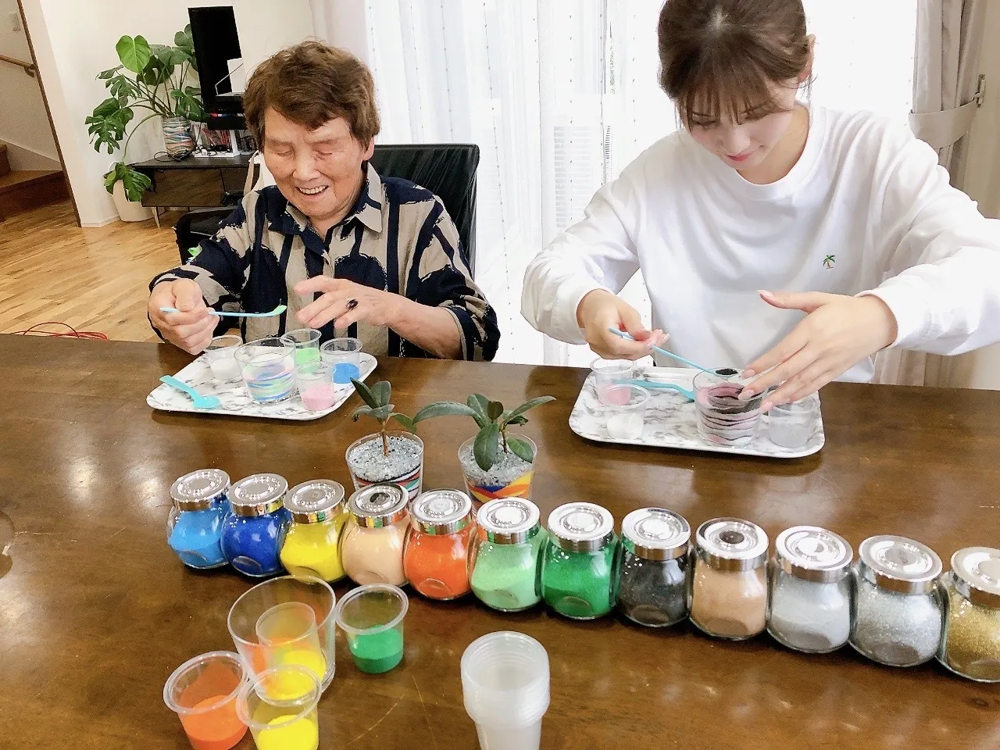
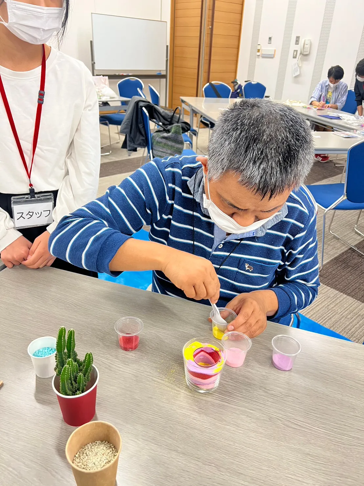

このたび、nicolonのサンドアートが、株式会社ISOプロが運営するメディア『ISOプロ』の記事「おすすめの介護関連サービス会社一覧」に掲載されました。介護施設・福祉施設の集客・エンゲージメントに役立つサービスとして、信頼できる会社の一つにお選びいただき、大変光栄です。いつも応援してくださる皆さま、ありがとうございます。
📣 掲載記事はこちら
ISOプロ「おすすめの介護関連サービス会社一覧」
https://activation-service.jp/iso/recommend/9449
ISOプロとはどんなメディア？
『ISOプロ』は、株式会社ISOプロが運営する、ISO認証やHACCP取得の支援をはじめとしたビジネス向けの情報を発信するメディアです。今回は、介護・福祉の現場で役立つ「おすすめの介護関連サービス会社」を紹介する記事の中で、nicolonのサンドアートワークショップを取り上げていただきました。
信頼性を重視するメディアに、介護施設向けのサービスとしてご紹介いただけたことは、これまで現場を一緒に作ってきた施設の皆さま・利用者の皆さまのおかげです。
なぜサンドアートが介護レクで注目されるの？
サンドアートは、色を選んでグラスに砂を重ねるだけ。特別な技術や力はいらないので、高齢者の方のレクリエーションにとても向いています。
- 座ったまま・片手でもOK：車椅子の方や手先に不安のある方も無理なく楽しめます
- 指先を使う＝リハビリにも：色を選び、砂を入れる動作が良い刺激に
- 認知症の方にもやさしい：難しい説明が不要で、「できた！」の達成感が得られます
- 作品が思い出に：完成品はご家族へのプレゼントや、お部屋の彩りに
- 職員様の負担ゼロ：準備から片付けまですべて講師が担当します
詳しくは、介護・高齢者向けの記事もあわせてご覧ください。

介護施設・福祉施設のレクにサンドアートを
準備・片付けは講師にすべてお任せ。3歳〜高齢者まで、どなたでも必ず作品が完成します。
「施設のレクで検討したい」とLINEで送るだけでOKです。
nicolonのサンドアートワークショップの特長
- 対象：3歳〜高齢者まで（車椅子の方も座ったままOK）
- 準備・片付け：すべて講師が担当（職員様の負担なし）
- 実績：500回以上の開催
- 対応エリア：福岡・博多を拠点に全国47都道府県（遠方はオンラインも）
- 料金：1名2,000円〜
介護施設・デイサービス・老人ホーム・敬老会・福祉イベントなど、幅広くご利用いただいています。これまでの事例は導入事例・実績まとめでもご覧いただけます。
よくあるご質問
ISOプロとはどんなメディアですか？
株式会社ISOプロが運営する、ISO認証・HACCP取得支援などビジネス向け情報のメディアです。信頼できるサービス会社を紹介する記事で、nicolonを「おすすめの介護関連サービス会社」の一つとして取り上げていただきました。
介護施設のレクにサンドアートは向いていますか？
はい。色を選ぶ・砂を入れるというシンプルな動作なので、車椅子の方や認知症の方にも無理なく楽しんでいただけます。指先を使う作業はリハビリ効果も期待できます。
施設スタッフの準備や片付けは必要ですか？
いいえ、材料の持参から片付け・清掃まですべて講師が担当します。職員様は利用者様のサポートに専念いただけます。
福岡以外でも出張してもらえますか？
はい、全国47都道府県へ出張対応しています。遠方や少人数の場合はオンライン開催も可能です。
まずはお気軽にご相談ください
24時間以内に返信いたします。施設の規模・ご予算・利用者様の状況に合わせて最適なプランをご提案します。

原野 玲未REMI HARANO
日本サンドアート協会 認定講師 / Webデザイナー
福岡県在住、5児の母。介護施設から企業イベントまで、年間100件以上の出張ワークショップを開催しています。
「誰でも簡単に、美しい作品が作れる」をモットーに、参加者全員が笑顔になれる時間を心がけています。